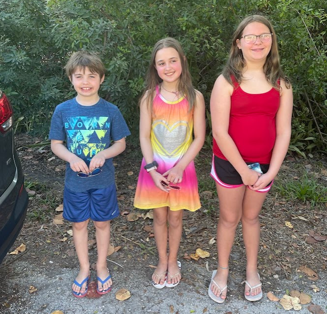
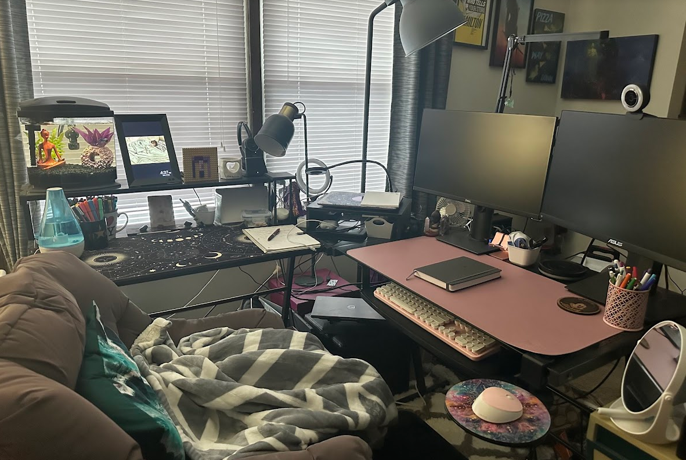

Stephanie Neuman - Landing Page
ACCOMPLISHMENT
One of the accomplishments that Stephanie is proud of is the raising of two, later three, intelligent and kind children and sharing her passions of animals and art with them.
GOAL
Stephanie strives to perform to the top of her potential in her career and has found that she excels at that while working remotely. The new normal has allowed her to create the perfect space for her to succeed (and it is by her snakes too!).
EMBELLISHMENT

Stephanie’s passion for her hobbies is palpable at times, as evidenced by this amazing work of art given to me as a gift from my children. Stepanie was able to guide them into exploring their own artistic sides in an effort of collaboration (which is not always easy between siblings) and my favorite part is that the stars are fingerprints.